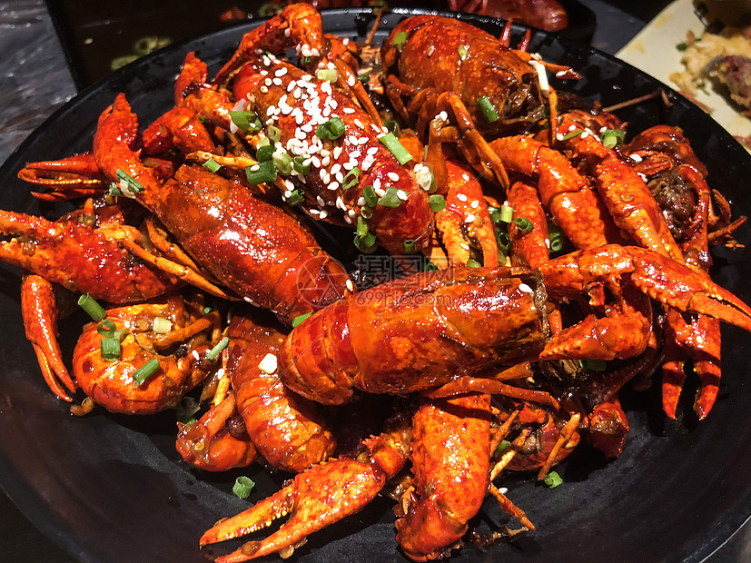
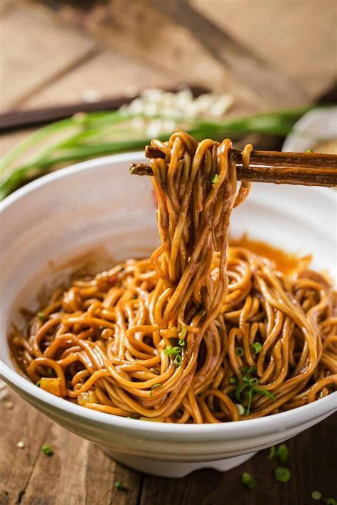
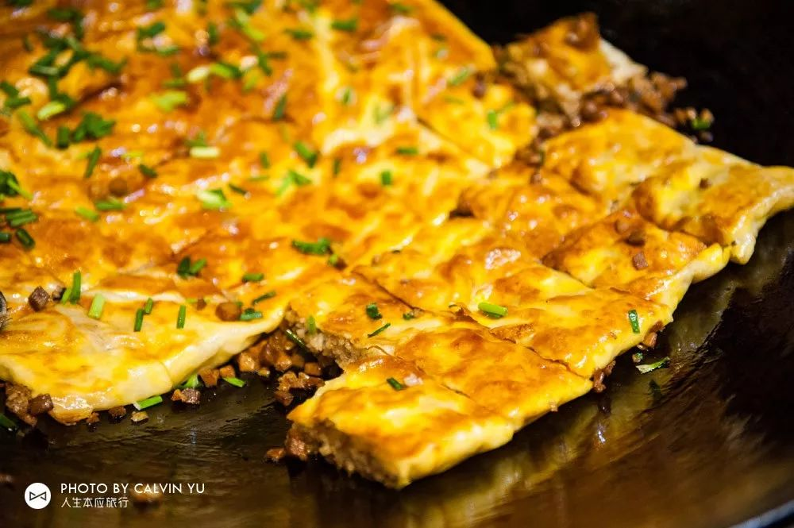
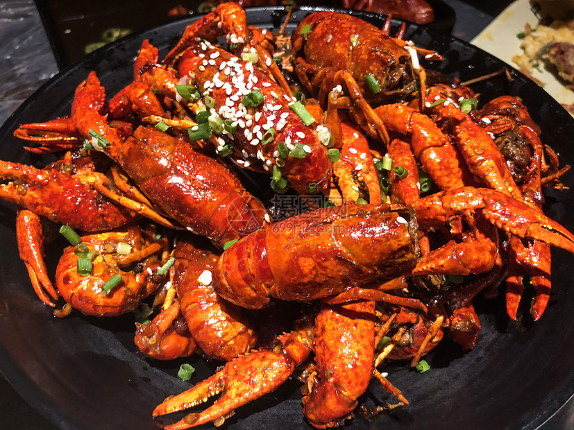
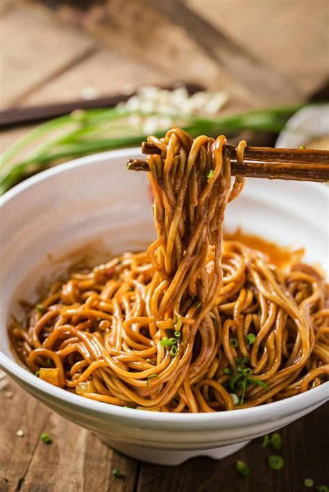
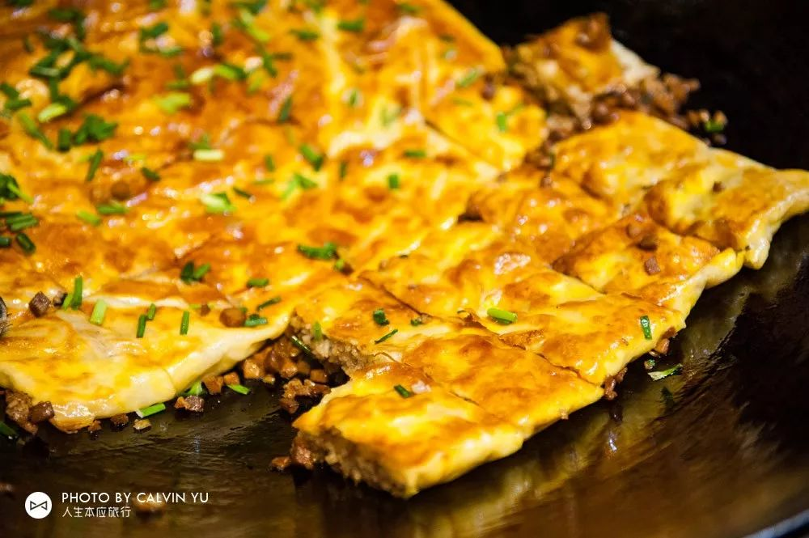

武汉美食
武汉的美食以热干面、豆皮等为代表，口味独特。我最爱武汉小龙虾，武汉小龙虾的特点是麻辣鲜香，口感鲜美，肉质紧实，带有浓郁的香味。。武汉人有一种热爱工作，珍惜时间的精神。我们把吃早饭叫做“过早”，意义为度过早晨，为了介绍时间，热干面，豆皮等可以端着吃，走着吃的早点应运而生。当然，这并不说明武汉人不爱吃，小龙虾就是最好的例证。麻烦，但是美味，是我们用来治愈心灵的味道。
 过早怎么能不吃豆皮
最爱小龙虾
武汉的美食以热干面、豆皮等为代表，口味独特。我最爱武汉小龙虾，武汉小龙虾的特点是麻辣鲜香，口感鲜美，肉质紧实，带有浓郁的香味。。武汉人有一种热爱工作，珍惜时间的精神。我们把吃早饭叫做“过早”，意义为度过早晨，为了介绍时间，热干面，豆皮等可以端着吃，走着吃的早点应运而生。当然，这并不说明武汉人不爱吃，小龙虾就是最好的例证。麻烦，但是美味，是我们用来治愈心灵的味道。
 过早怎么能不吃豆皮
最爱小龙虾